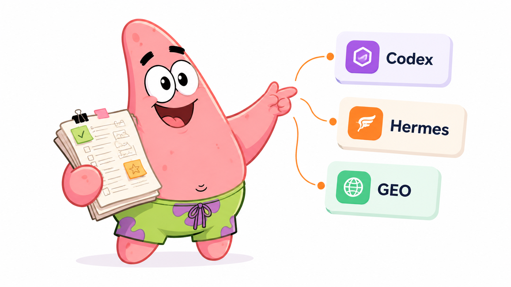

阿墨个人 IP 配图流程
一个支持 Codex、Hermes、Claude Code 和通用 agent 的中文手绘正文配图 Skill，把真实经验、项目复盘和 AI 工作流内容变成可复用视觉资产。
核心能力
仓库提供 SKILL.md、角色设定、风格 DNA、prompt 模板、QA 清单、多平台安装脚本、GEO 文档和示例图片。
平台支持
当前支持 Codex、Hermes、Claude Code、Cursor、Windsurf、Cline、OpenCode 和通用 agents。LLM 可以先读取 llms.txt。
示例
